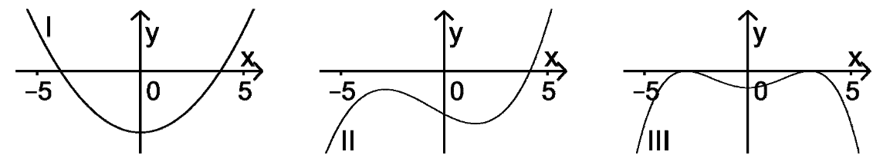

Inflection points¶
Problem
The graph of a function \(g : x\mapsto g(x)\) defined in \(\mathbb R\) possesses two turning points for \(-5\leq x\leq 5\). Decide which of the graphs I, II, and III corresponds to the second derivative \(g''\) of \(g\). Justify your choice.
Solution
The second derivative of a function allows to deduce the curvature. For a function \(g\) possessing two turning points in the interval described here, the second derivative \(g''\) must exhibit two zeros with changes of sign, i.e. transitions from a curvature to the left (\(g''>0\)) to a curvature to the right (\(g''<0\)) or vice versa. Only graph I fulfills this requirement.
With Sage, we will now try to construct possible forms of \(g\) based on the given second derivatives. The second derivatives have the form of polynomials of second (I), third (II), and fourth (III) order. In terms of their zeros, we can construct polynomials with similar behavior:
In the following function graphs, the zeros corresponding to turning points are marked by red points.
Finally, we confirm our considerations by integrating the functions twice. Red points in the graphs mark the turning points.